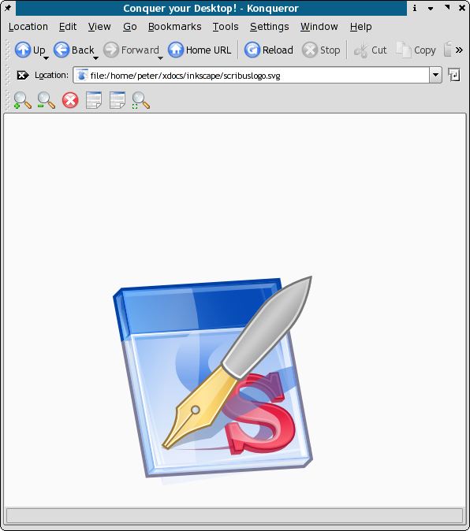

Scribus verfügt ab Version 1.2.x über Plugins für den SVG-Import/Export, womit sich Scribus-Seiten oder -Objekte als SVG exportieren lassen. Mit dem Plugin für den Import können Sie SVG-Grafiken und -Dokumente von Illustrationsprogrammen wie Inkscape, Skencil und Adobe Illustrator einbringen.
Diese Plugins besitzen die Fähigkeit, nach SVG-1.0 genormte 2-dimensionale Grundformen sowie Texte zu im- und exportieren. Um diese darzustellen, benötigen Sie entweder einen SVG-fähigen Inernetbrowser, einen SVG-Betrachter oder einen SVG-fähigen Vektoreditor wie Skencil, Inkscape oder Adobe Illustrator.
Halten Sie einfach die zu exportierende Seite geöffnet, und wählen Sie Datei > Exportieren > Als SVG speichern..
Wählen Sie Datei > SVG importieren. Wenn Sie eine SVG-Grafik (als Bild oder Zeichnung) importieren, dann erscheint sie als neues Objekt der Bibliothek. Ziehen Sie die SVG-Grafik mit dem Mauscursor an die gewünschte Stelle.
Scribus kann mit den meisten SVG-Merkmalen und Funktionen umgehen, die von Inkscape und Sketch, zwei weit verbreiteten Vektor-Zeichenprogrammen für Linux, erzeugt werden. Das größte Problem, das ich bemerkt habe, sind die Pfade, die, wenn interpretiert, gelegentlich nicht als geschlossen erscheinen. Daher sehen Teile der SVG-Datei beim Import leer aus. Dies ist einfach zu lösen, indem die Gruppierung der Elemente aufgehoben und die leer aussehenden markiert werden. Anschließend rufen Sie mittels Doppelklick die Bearbeitungspalette zum Objektzeichnen auf und klicken auf die Schaltfläche "Pfad schließen". Üblicherweise erscheinen danach die unsichtbaren Objekte.
Normalerweise vermeide ich das Erzeugen spezieller Text-Effekte in SVG. Ausnahme A: Es ist in Scribus nicht machbar (wobei Scribus eigentlich vielfältige Texteffekt-Funktionen hat). Ausnahme B: Die Texteffekte werden vor dem Import zu Umrissen konvertiert. Weshalb? Scribus verwendet zur Behandlung von Schriftarten und Texten ein PostScript-Modell, während SVG ein Modell wie HTML benutzt.
SVG (Scalable Vector Graphics) ist ein von W3C empfohlener Standard für Vektorgrafiken wie Linienzeichnungen, (Land-)Karten und Logos.
Scribus besitzt in zunehmendem Maße intelligente Zeichenwerkzeuge, die uns gleichermaßen vertraut wie leicht benutzbar sind. Der Endbenutzer möchte seine mit Scribus erzeugte Objekte vielleicht in anderen Anwendungen, wie etwa im Webdesign, einsetzen. Viele andere Applikationen können SVG-Grafiken importieren und SVG-Objekte in andere Dateiformate exportieren. Dies macht es auch leicht möglich, die Objekte für den Druck und für das Web aus einer Quelle zu erstellen.
Grundlegende 2D-Grafik und Text. Text mit Pfadangabe kann mit anderen Applikationen funktionieren, muß aber nicht. Adobe Illustrator und Sodipodi sind (zunehmend) beide recht gut zu gebrauchen, da sie Scribus-SVG importieren. Sämtliche Merkmale und Funktionen eines Scribus-Dokuments lassen sich als SVG exportieren. Die Bilder einer Seite werden nach PNG konvertiert. Der Webbrowser von Amaya kann Scribus-SVG auch darstellen. Einige Arbeitsversionen (Builds) von Mozilla beinhalten schon ein SVG-Rendering, und künftig werden dies möglicherweise alle Versionen als Standard mitbringen.
Die aktuelle Version des SVG-Import-Plugins hat folgende Einschränkungen:
SVG als Dateiformat bringt eine ganze Reihe von Vorteilen:
Mozilla hat schon seit langem spezielle Arbeitsversionen, die von sich aus SVG unterstützen. Der Stammcode von Mozilla wird regelmäßig mit SVG-Unterstützung erstellt. Er ist auf der FTP-Seite von Mozilla zu finden. Ebenfalls interessant ist das neueste SVG-Plugin von Adobe, denn es funktioniert gut in meinen Tests mit Mozilla 1.4+ und dem Konqueror.
Bei der SVG-Stiftung gibt es jede Menge Links und Neuigkeiten.
Weitere Links sind auf der Link-Seite zu finden.
|  |